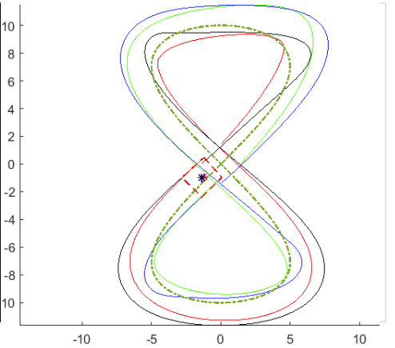
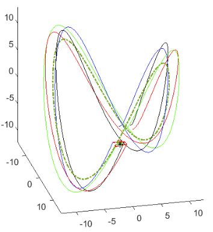

Description
A study on multi-robot formation algorithms and architecture following Wei Ren's research paper on “Distributed Coordination Architecture for Multi-Robot Formation Control”. Where I implement the algorithms on my own simulation environment and add a 3rd dimension for aerial vehicles.
Ren, Wei, and Nathan Sorensen. “Distributed Coordination Architecture for Multi-Robot Formation Control.” Robotics and Autonomous Systems, vol. 56, no. 4, 2008, pp. 324–333., https://doi.org/10.1016/j.robot.2007.08.005.
Study
Method
1. Leaders read current Mission Formation Center
2. Robots exchange information on Formation Center
3. Every robot uses a state estimator to estimate formation center
4. Robots move to keep in formation
Main Idea:
1. Leader sees followers lagging behind
2. Leader slows down to accommodate
Implementation and parameters
Used all the equations provided on the paper where the estimation of the formation center is calculated as well as the robot dynamics. This was adapted and analyzed on both 2D and 3D by adding another dimension to the equation.
Simulation and testing
Using Matlab I created a simulation environment where 4 robots must keep a box formation thought flight while also taking into consideration the position of all the robots to determine where the formation center will be. The simulation also shows a trace of previous positions and where the relative formation center is of every robot.
Square Formation: Figure 8

Square Formation: 3D Saddle
